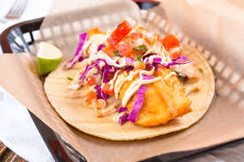

2.Baja California

- Platillo: Tacos de pescado estilo Ensenada
- Ingredientes: Filete de pescado rebozado, tortilla de maíz, col rallada, salsa tártara, limón.
- Historia: Surgieron en los años 50 en Ensenada por influencia japonesa en la técnica de freír pescado.
- Dato curioso: Son considerados un emblema de la cocina urbana mexicana y famosos internacionalmente.